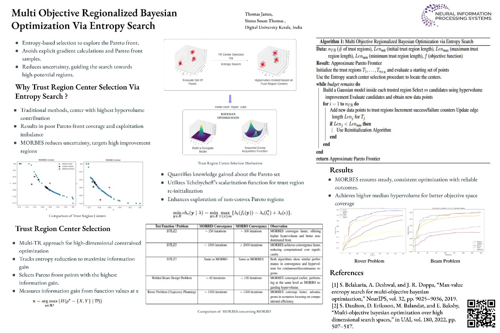

HELLO!
EMAIL: 7homasjames@gmail.com
I am a researcher and engineer specializing in Explainable AI, Bayesian Optimization, and Multi-Objective Optimization. My work focuses on developing AI models that are transparent, interpretable, and effective in real-world decision-making. I am passionate about bridging the gap between theory and application, ensuring AI systems provide clear and justifiable insights rather than just predictions.
I hold a Master’s degree in Computer Science with a Specialization in Machine Intelligence from Kerala University of Digital Sciences, Innovation & Technology, and a Bachelor’s degree in Physics from Sacred Heart College, Thevara. My research contributions include the development of Multi-Objective Regionalized Bayesian Optimization via Entropy Search, presented at the NeurIPS 2024 Optimization for Machine Learning Workshop.
My industry experience includes working as a Machine Learning Engineer at Aguilar Labs LLP, where I contributed to AI-driven sports analytics, insurance claims automation, and risk assessment models. Previously, as a Data Engineering Intern at Beamlytics, USA, I developed BigQuery ML models for demand forecasting and sales prediction, optimizing large-scale business processes.
My research interests include large-scale AI optimization, explainable decision-making, and counterfactual reasoning. I have a strong background in machine learning frameworks like PyTorch, TensorFlow, and Scikit-Learn, and I leverage cloud computing with Azure and Google Cloud Platform for scalable AI solutions. Additionally, I am the co-founder of AI-thical Studios, an AI-driven creative initiative that won the 100x GenAI All India Buildathon.
If you’d like to connect, explore my work on GitHub, LinkedIn, or check out my CV.
RESEARCH
My research interests lie at the intersection of Explainable AI, Bayesian Optimization, and Multi-Objective Optimization. I focus on developing AI models that are not only efficient but also transparent and interpretable, ensuring that decision-making processes are clear, justifiable, and actionable.
My work integrates optimization techniques, information theory, and probabilistic modeling to enhance AI explainability and performance. I am particularly interested in leveraging counterfactual reasoning and uncertainty quantification to improve model interpretability and robustness in real-world applications.
My current research focuses on developing novel algorithms for scalable Bayesian Optimization, incorporating multi-objective and entropy-based search strategies. These methods aim to improve hyperparameter tuning, model selection, and trust-region optimization for complex AI systems.
Ultimately, my goal is to bridge the gap between theory and application, ensuring that advanced optimization and explainability techniques translate into real-world AI systems that drive innovation and meaningful decision-making.
You can view my CV here if you are interested in more details.
RESEARCH PAPERS
Multi-Objective Regionalized Bayesian Optimization via Entropy Search
NeurIPS POSTER
Pioneering AI Innovations: Transforming Industries with Cutting-Edge Solutions
At Aguilar Labs LLP and Beamlytics, I have spearheaded proof-of-concept projects that blend artificial intelligence, automation, and advanced analytics to create transformative solutions. From developing AI-driven innovations to leveraging BigQuery and Looker for real-time insights and predictive modeling, my work is focused on pushing technological boundaries to drive impactful, data-driven decision-making.
- Beamlytics Lens: Developed a scalable analytics platform using BigQuery and Looker to deliver real-time business insights. Integrated predictive models for sales forecasting and demand prediction while optimizing data workflows with Pub/Sub automation. Streamlined operations by enhancing scheduling efficiency. [GitHub]
- Explainable AI for Player Performance Analytics: Developed an Explainable AI (XAI) system for the sports industry to analyze player performance, optimize training, and assist in game-time decision-making. The model utilized machine learning to predict player potential while integrating SHAP and LIME for transparency, ensuring that AI-driven insights were interpretable for coaches and analysts. Bias detection mechanisms were incorporated to promote fairness in evaluations, making AI decisions more ethical and trustworthy for stakeholders.
- Agentic AI Risk Analyzer: Developed an AI-powered risk assessment system for an insurance company, leveraging multi-agent collaboration to evaluate medical data and determine potential risks associated with providing insurance coverage. [GitHub]
- OncoQuery – AI-Powered Oncology Research Assistant: Built an AI-powered oncology research assistant that utilizes RAG techniques for retrieving and summarizing cancer patients prescriptions and also research papers. This project helps medical professionals quickly access relevant insights, making patient analysis and research more efficient. [GitHub]
- Agentic-Tutor: An Autogen bot designed to assist students in comprehending complex concepts effectively. It provides interactive explanations, real-time assistance, and adaptive learning experiences. [GitHub]
- GraphRAG: Explored graph-based retrieval-augmented generation techniques to enhance data retrieval, improve search accuracy, and provide contextualized responses. Along with it developed features for converting text to SQL and cypherqueries [GitHub]
- AI Web Scrapper: Developed a robust tool to efficiently scrape and extract important information and email addresses from websites, facilitating data collection and outreach efforts for businesses. [GitHub]
- Semantic-Kernel-RAG: Implemented Retrieval-Augmented Generation (RAG) techniques leveraging Microsoft's Semantic Kernel for intelligent document retrieval, AI-powered text generation, and enhanced contextual accuracy in large language model (LLM) responses. [GitHub]
- Prompt Engineering Bot: A FastAPI-based solution designed to optimize prompt engineering in AI applications, allowing for better interaction with language models and structured responses. [GitHub]
Aithical studios
An AI-driven content creation platform designed to revolutionize digital marketing by automating and optimizing content generation. By leveraging advanced AI tools such as ChatGPT for creative prompts, MidJourney for visual generation, and ElevenLabs for dynamic dialogues, Aithical enables businesses—especially small enterprises—to produce high-quality, engaging content at scale. The platform ensures real-time campaign optimization, creative flexibility across various formats, and cost-effective solutions, empowering brands to enhance their reach while reducing production costs and time delays.
Awards & Achievements
- 100x GenAI All India Buildathon Winner: Secured the top position in a prestigious national-level AI innovation competition.
- Co-Founder of AI-thical Studios: Established a pioneering AI research and development studio focused on ethical AI solutions.
- UGC NET Qualified: Achieved national eligibility for lectureship and research in computer science.
- Outstanding Academic Performer - Governor of Kerala: Recognized for exceptional academic excellence by the Governor of Kerala.
Certifications
- Streaming Analytics Systems on Google Cloud Platform: Certified by Google Cloud Skill Boost.
- Foundations of Data Analytics: Completed through Coursera.
- Amazon Bedrock and AWS Generative AI: Certified via Udemy.
- National Cadet Corps Air Wing C Certificate: Awarded by the Ministry of Defence, Government of India.